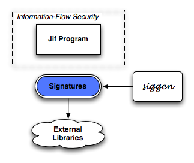

|
A signature generator for Jif The Jif language allows programmers to check that their programs are information-flow secure. This requires that every source and sink in the program be labeled, including library functions. Signatures are used to specify the security behavior of library functions. Generating these signatures by hand can be tedious[1]. siggen can automatically generate signatures for your Java and Jif files. It does not examine the bytecode to provide labels that match the security behavior of a library function. Dave King is the author and maintainer of siggen. |
 |
You can download siggen 0.2.0 here (~5M). Use ant to build the files.
-sigext (class): extension to use for parsing the source file. By default, this is polyglot.frontend.JLExtensionInfo, meaning that siggen operates on files with extension jl, written in Java 1.4. To parse Jif code, use the argument -sigext jif.ExtensionInfo.
-sigout (directory): directory to output the signature files to. By default, this is sig-src. -sigcp (directory): set the signature classpath (from Jif) -addsigcp (directory): append to the signature classpath (from Jif)
If you are parsing Jif code that contains principals, be sure to add the directory containing those principals to the classpath. For example, to use the principals Alice, Bob, Chuck, Dolores, and Ethel provided by the Jif installation, add the line -classpath $JIF/tests to the arguments you give to siggenc. (assuming $JIF points to your Jif directory)
Some more general statements about usage can be found here.
Jif Signatures for Java Card Applets: Java Card is an application framework that allows developers to write Java code that can run on Java-enabled smartcards.
Wallet is a small Java Card application that uses certain classes from the Java Card API; for example, the APDU (an input/output device) and ISOException (a type of exception). Download a version of Wallet: java, jif[2].
To generate signatures for the Java version of Wallet (contains no labelings), run the command:
siggenc -classpath javacardframework.jar Wallet.jl
Here javacardframework.jar is the jar file containing the Java Card API framework[3].
To generate signatures for the Jif version of Wallet (contains some labeling of PIN), run the command:
siggenc -sigext jif.ExtensionInfo -classpath javacardframework.jar:$JIF/tests Wallet.jif
The output from this should look something like:
generate signature for polyglot class: javacard.framework.ISOException generate signature for polyglot class: javacard.framework.OwnerPIN generate signature for polyglot class: javacard.framework.APDU generate signature for polyglot class: javacard.framework.ISO7816 generate signature for polyglot class: javacard.framework.Applet generate signature for polyglot class: java.lang.Throwable
These signatures can then be compiled with Jif:
jifc -d sig-classes sig-src/javacard/framework/*.jif
siggen does its best to generate a minimal set of signatures. Note that even though OwnerPIN implements the PIN interface, because the PIN interface is not directly referenced in the source code, we do not generate its signature.
Specifying jifsig.jar as part of the signature classpath using -addsigcp will prevent siggen from re-generating signatures: for example, java.lang.Throwable would not be generated in the above list, as this is a signature class from the default Jif installation..
[1] Boniface Hicks, Kiyan Ahmadizadeh, and Patrick McDaniel. Understanding practical application development in security-typed languages. In 22st Annual Computer Security Applications Conference (ACSAC), Miami, Fl, December 2006.
[2] Wallet.jif will not compile under jifc; it is intended only to demonstrate how siggen can use the Jif parser.
[3] javacardframework.jar not available here due to licensing restrictions. It can be obtained from the Java Card site in the Java Card SDK.